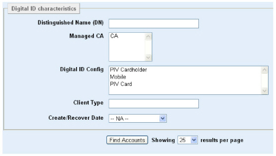

|
IdentityGuard Server 12.0 Administration Guide |
|
IdentityGuard Server 12.0 Administration Guide |
Use one of the following procedures to search for digital IDs that belong to an individual user or list of users.
To find digital ID information
1. Log in to the Entrust IdentityGuard Administration interface as the administrator.
 On the
Windows computer where Entrust IdentityGuard is installed
On the
Windows computer where Entrust IdentityGuard is installed
2. On the main menu, click Certificates.
3. Click the List Digital IDs tab.
4. Enter search criteria, if required. If no search criteria is entered, all digital IDs are returned.

● Distinguished Name (DN) — Enter a full DN or partial DN of the users. For example, o=Ottawa,c=CA finds users with cn=Alice Smith,o=Ottawa,c=CA and cn=Bob Jones,o=Ottawa,c=CA in their DNs.
● Managed CA — Enter the name of a managed CA as it appears under Certificates > List Managed CAs > Managed CA Name. Only users who have accounts in this managed CA are returned.
● Digital ID Config — Enter the name of a digital ID config as it appears under Certificates > List Managed CAs > <Managed_CA_Name > Digital ID Config Name. Only users who have digital IDs created using this digital ID config are returned.
● Client Type — Enter the name of a client type. A client type is any piece of information set by an Entrust IdentityGuard client and passed to Entrust IdentityGuard server. For example, the Self-Service Module sets the client type to the brand of mobile device on which a digital ID is being downloaded. You can therefore use the Client Type field to search for digital IDs that have been downloaded to particular mobile device types. The client type values set by the Self-Service Module are: android, blackberry, blackberryTablet, iOS, windowsPhone.
Note: The Client Type maps to the Device Type Value property listed in the Self-Service Module’s Configuration interface, under Properties > Digital ID Device Type Settings.
● Create/Recover Date — Pick a date range during which one or more digital IDs were created or recovered. (Recovered is another word for ‘re-created’.) Only digital IDs that were created or recovered during this date range are returned.